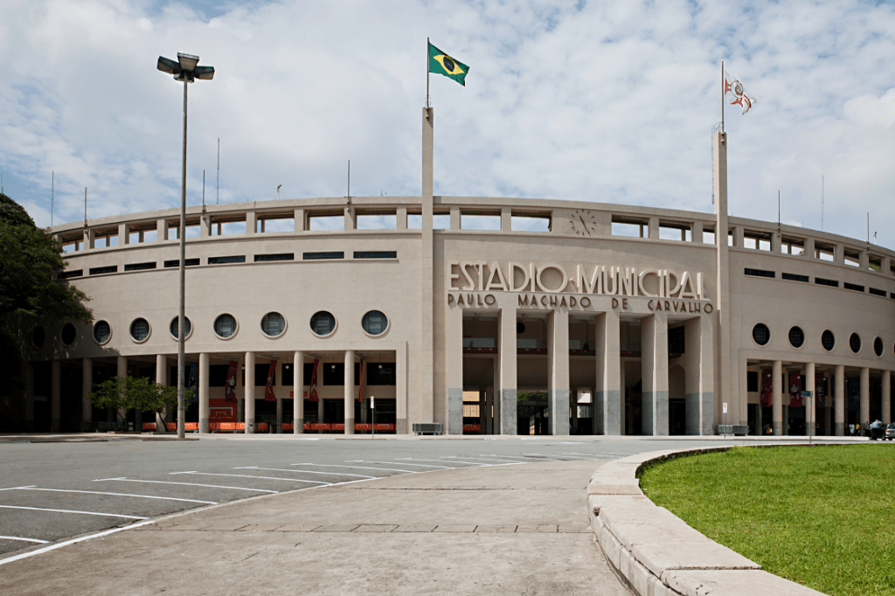

São Paulo 470 Anos
O Museu do Futebol, inaugurado em 2008 no Estádio do Pacaembu em São Paulo, foi criado para preservar, celebrar e divulgar a história e cultura do futebol brasileiro. O museu explora a influência do futebol na sociedade, política e vida cotidiana do Brasil, oferecendo um espaço interativo e educativo com exposições que destacam desde os primeiros passos do esporte até seus grandes triunfos. Além disso, desempenha um papel importante na preservação de documentos e objetos históricos relacionados ao futebol.
A criação do Museu do Futebol contou com o apoio crucial de fundações como a Fundação Roberto Marinho, que contribuiu com expertise e recursos, e a Associação Museu do Futebol, responsável pela gestão do projeto. A Fundação Itaú Cultural também apoiou o museu através de patrocínios e colaborações em exposições. Junto ao Governo do Estado de São Paulo, essas instituições garantiram os recursos e a visão necessários para concretizar o museu, que hoje se destaca no Brasil e internacionalmente.